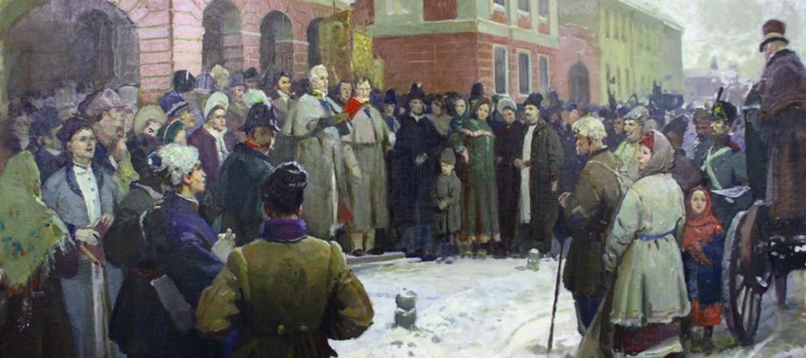
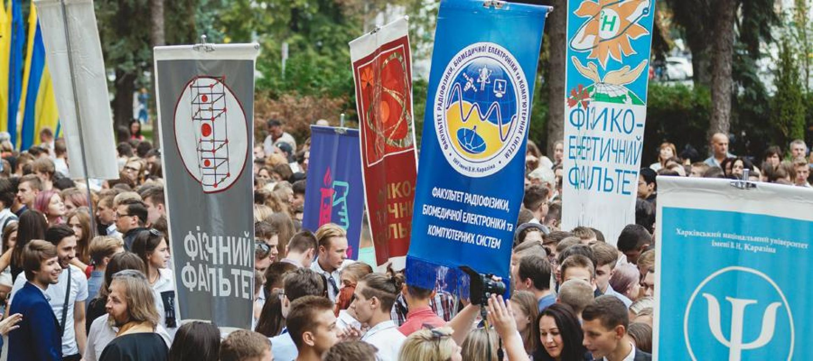
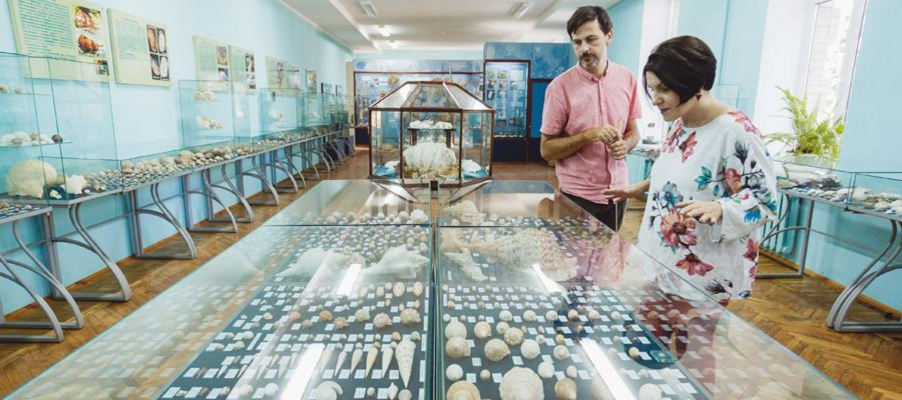

Харківський національний університет — один із найстаріших університетів Східної Європи. Заснований у листопаді 1804 року з ініціативи видатного просвітника В. Н. Каразіна, згідно із грамотою Олександра І.

Урочисте відкриття університету відбулося 29 січня 1805 року. Університет вписав багато яскравих сторінок в історію українського національного відродження ХІХ–ХХ століть, дав потужний імпульс перетворенню Харкова на великий науковий і культурний центр, освітянську столицю України, по праву займає вищі шаблі всеукраїнських рейтингів серед класичних університетів і добре відомий далеко за межами України.
Історія Харківського національного університету є невіддільною частиною інтелектуальної, культурної та духовної історії України. З ним пов’язані імена таких усесвітньо відомих учених, науковців та просвітників, як П. П. Гулак-Артемовський, О. М. Ляпунов, М. І. Костомаров, М. П. Барабашов, М. М. Бекетов, Д. І. Багалій, А. М. Краснов, М. В. Остроградський, В. А. Стеклов, О. О. Потебня, О. В. Погорєлов та багато-багато інших.

Харківський університет — єдиний в Україні, де навчалися і працювали три лауреати Нобелівської премії — біолог Ілля Мечников, економіст Семен Кузнець, фізик Лев Ландау.
Почесними членами та почесними докторами університету в різні часи було обрано визначних діячів науки та культури різних країн: І. В. Гете і О. Гумбольдта, Івана Франка і Лева Толстого, П. П. Семенова-Тян-Шанського та інших.
Серед почесних докторів університету — перший президент України Михайло Грушевський.
З університетом пов’язане видання перших вітчизняних газет і часописів, створення перших наукових товариств.
За роки існування університет закінчили понад 130 тисяч осіб. Імена вихованців університету увічнені в географічних назвах, назвах космічних об’єктів, рослин і мінералів, законів і формул. Близько 60 випускників університету стали дійсними членами і членами-кореспондентами Національної Академії наук України.

Наразі до складу університету входить 20 факультетів: біологічний; геології, географії, рекреації та туризму; екологічний; економічний; іноземних мов; історичний; комп’ютерних наук; медичний; математики і інформатики; міжнародних економічних відносин та туристичного бізнесу; психології; радіофізики, біомедичної електроніки та комп’ютерних систем; соціологічний; фізико-енергетичний; фізико-технічний; фізичний; філологічний; філософський; хімічний; юридичний. А також навчально-науковий інститут «Каразінська школа бізнесу».
На факультетах, у Центрі міжнародної освіти, центрі довузівської підготовки навчається 16 800 (Або 20 300 здобувачів освіти) студентів та слухачів, 255 аспірантів та докторантів. У наукових дослідженнях та підготовці кадрів беруть участь 440 докторів наук, професорів, понад 1 242 кандидатів наук, доцентів. Серед працівників університету — 24 академіки і члени-кореспонденти НАН України та галузевих академій.
Підготовка фахівців у Харківському національному університеті імені В. Н. Каразіна здійснюється за 115 спеціальностями та спеціалізаціями, охоплює весь спектр сучасної класичної університетської освіти.
Щорічно студентами університету стають абітурієнти, серед яких близько 30 % — медалісти та 10 % — призери третього і четвертого етапів Всеукраїнських учнівських олімпіад.
В університеті працює 20 академіків і членів-кореспондентів НАН та галузевих академій України і 50 лауреатів Державної премії. Активно діє понад 20 всесвітньо відомих наукових шкіл, працює 19 спеціалізованих рад із захисту докторських та кандидатських дисертацій. Щорічно вченими університету публікується близько 60–65 монографій, збірників наукових праць, понад 2 тисяч статей та тез доповідей, проводиться 20–25 міжнародних конференцій.
Університет є головною науковою організацією кількох міжнародних космічних програм. Науковці університету співпрацюють за міжнародними програмами з ученими США, Канади, Росії, Німеччини, Туреччини, Китаю, Японії, Швейцарії, Болгарії, Англії та інших країн світу.
В університеті з 1808 року функціонує астрономічна обсерваторія, яка є однією з провідних астрономічних установ України, де проводяться фундаментальні і прикладні дослідження з фізики Сонця, планет, астероїдів, комет і супутників.

Музей Природи університету заснований в 1807 році і є одним із найстаріших вузівських музеїв світу. Щороку музей відвідує понад 22 тисячі екскурсантів. У 23 залах музею (площею 2 тис. кв. м) розміщено близько 250 тис. експонатів за такими розділами: походження людини, дарвінізм, зоологія, геологія. При університеті діє Музей археології, колекція якого налічує близько 150 тисяч одиниць зберігання.
Центральна наукова бібліотека Харківського національного університету заснована 30 січня 1805 року. За рішенням Міністерства культури України (1987 р.) вона визнана установою, що має особливе громадське значення. Загальний фонд бібліотеки нараховує 3,5 млн примірників, серед них — 50 000 унікальних видань (17 інкунабул, понад 1000 рукописів, 300 палеотипів; прижиттєві видання класиків світової літератури, науки та культури).
З 2003 року згідно з Указом Президента України Харківський національний університет імені В. Н. Каразіна має найвищий статус самоврядного (автономного) державного вищого навчального закладу.
У лютому 2010 року згідно Постанови Кабінету Міністрів України Харківському національному університету імені В. Н. Каразіна надано статус дослідницького університету.
Харківський національний університет імені В. Н. Каразіна здійснює широку програму міжнародного співробітництва, є активним членом міжнародної спільноти провідних європейських та світових університетів. Він здійснює угоди про співробітництво з 61 організаціями-партнерами у 25 країнах світу.
Університет є співзасновником Євразійської Асоціації університетів, входить до Всесвітньої та Європейської Асоціацій університетів, Асоціації Європейської мережі ядерної освіти.
У листопаді 2020 року Харківський університет відзначив 216-річчя від дня підписання Стверджувальної грамоти про його заснування, а в січні 2020 року відзначив 216-річчя від дня його відкриття.